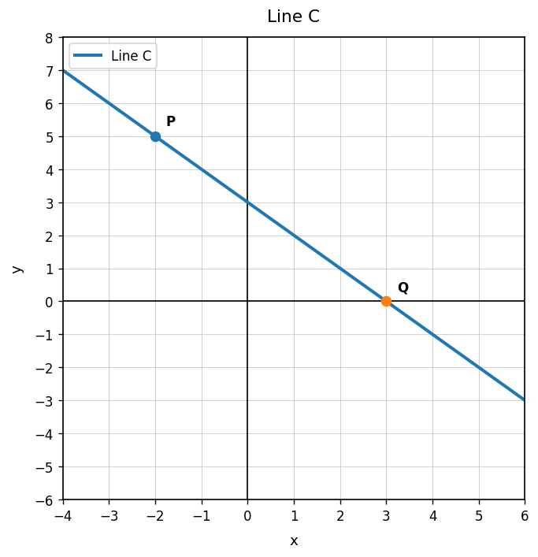
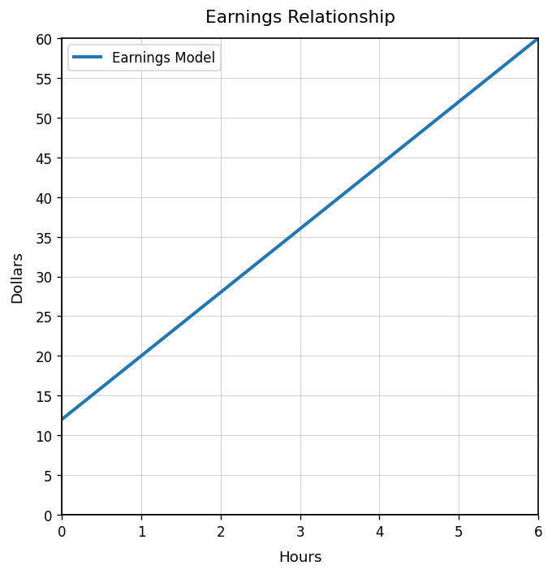

Practice Set 2.1.2
Use Line C. Is the rate of change positive, negative, zero, or undefined? Explain briefly.

Find the rate of change from the table.
| Input | 1 | 2 | 3 | 4 |
|---|---|---|---|---|
| Output | 11 | 15 | 19 | 23 |
A plant grows from 9 cm to 21 cm over 4 weeks. Find the rate of change in centimeters per week.
A student finds the slope between $(1,5)$ and $(4,17)$ by calculating $\frac{4-1}{17-5}$. Identify the error and find the correct slope.
Which representation is shown?
$C=12+8h$
- graph
- table
- equation
- context
Use the table. What ordered pair corresponds to $x=2$?
| $x$ | 0 | 1 | 2 | 3 |
|---|---|---|---|---|
| $y$ | 5 | 9 | 13 | 17 |
A store charges $\$3$ for each sticker sheet plus $\$2$ for shipping. What could the input represent? What could the output represent?
Use the graph. What output appears when the input is $4$?

Create a table with at least four ordered pairs for the equation $y=2x+5$.
Does the equation $C=6t+15$ match this context? A camp charges $\$15$ to register and $\$6$ per activity. Explain.
A student says the equation $y=5x$ matches a table with outputs $5,10,20,25$ for inputs $1,2,3,4$. Critique the claim.
Create two representations that almost match but have one mistake. Then explain the mistake and revise one representation so they match.
Name the quadrant containing $(-5,2)$.
In the ordered pair $(7,-3)$, identify the $x$-coordinate and the $y$-coordinate.
Use the coordinate plane. Choose two labeled points and describe how their locations are different.

A graph uses $x$ for miles driven and $y$ for gallons of gas remaining. Explain why the axes matter when interpreting a point.